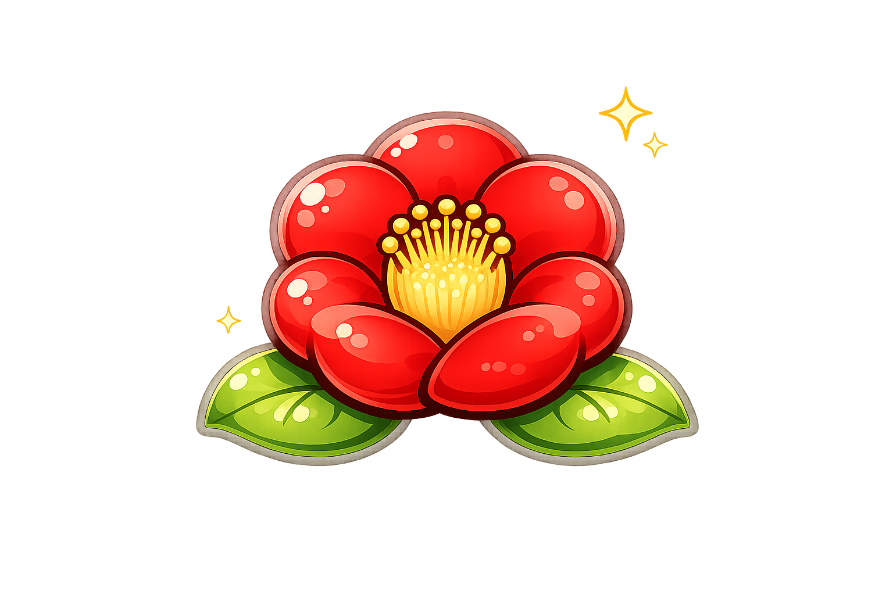
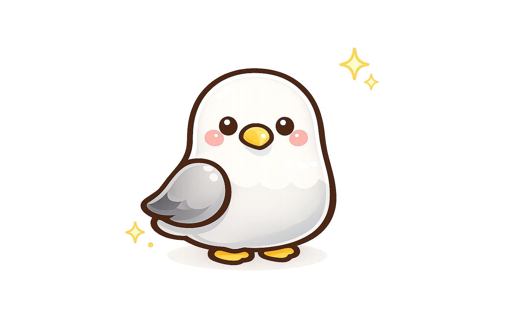
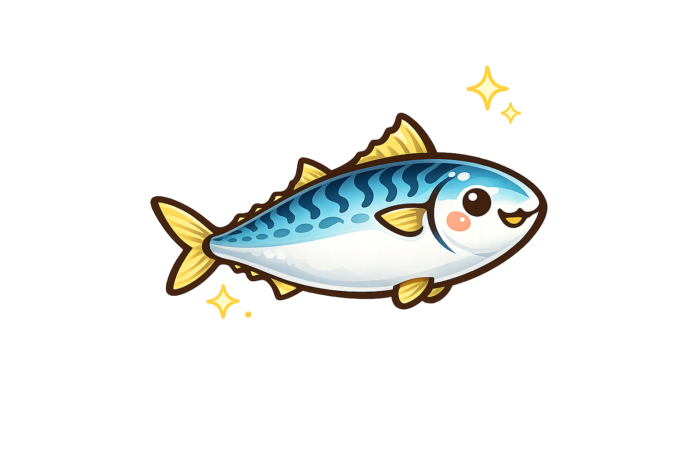

부산 갈매기
Boogi
2002년 월드컵의 환희 속에 태어난 부기는 패션에 관심이 많은 부산 갈매기다.
세상에 단 하나뿐인 동백꽃 커스텀 슈즈도 직접 디자인했다. 사람을 좋아하는 '프로 참견러' 갈매기로서 곤경에 빠진 사람을 그냥 지나치지 못해 도와주려고 애쓰지만 팔이 짧은 탓에 뜻하는 대로 되지 않아 애를 먹는다. 무조건 먼저 해보고 싶어하는 얼리어답터로, 머리에는 항상 빨간 스마트 글래스를 착용하고 다닌다. 궁금한 건 스마트 글래스를 통해 바로바로 찾아본다.
부산의 상징


